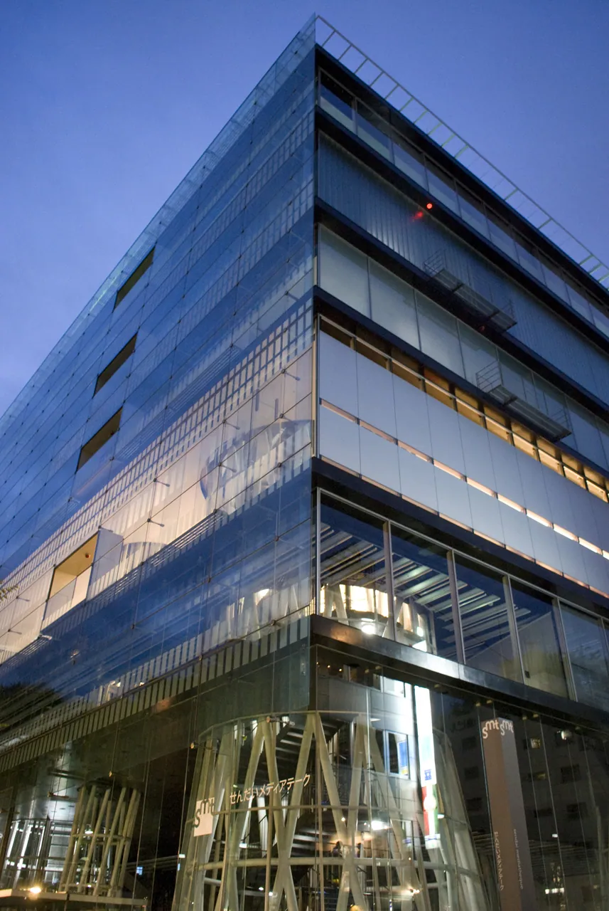
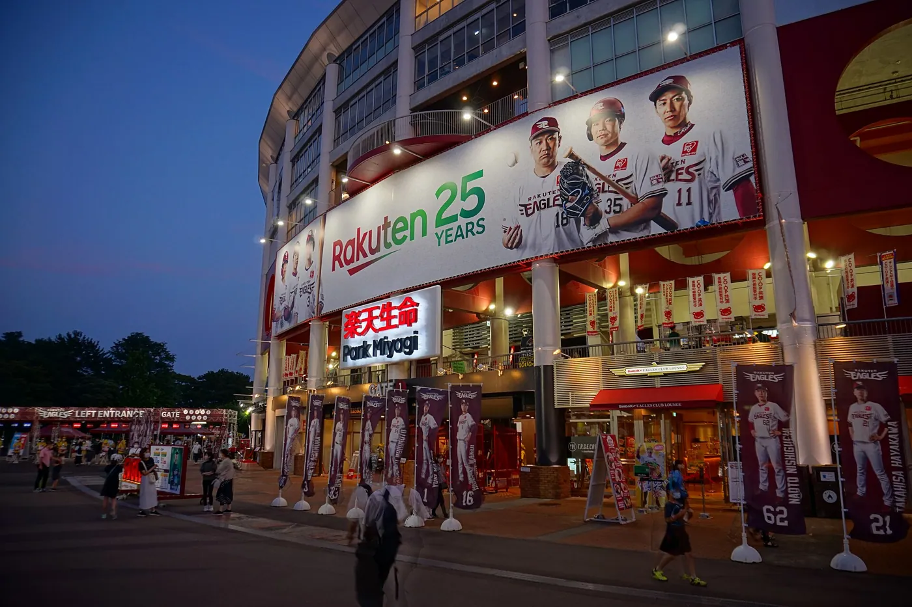
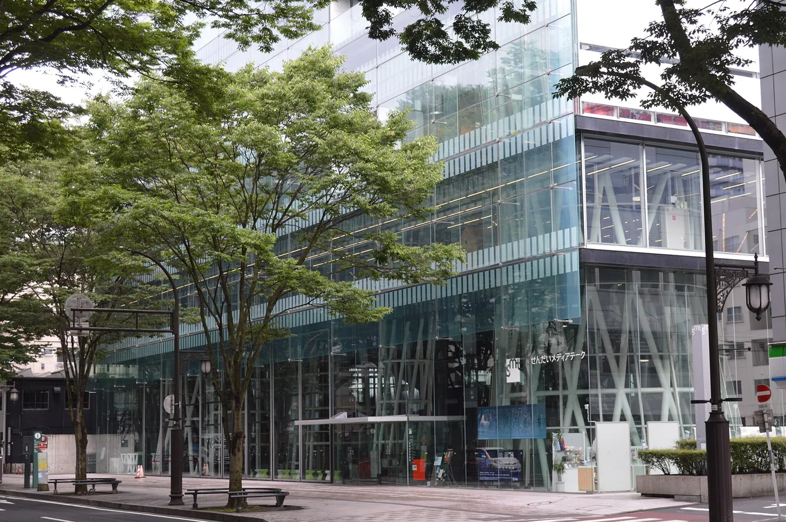
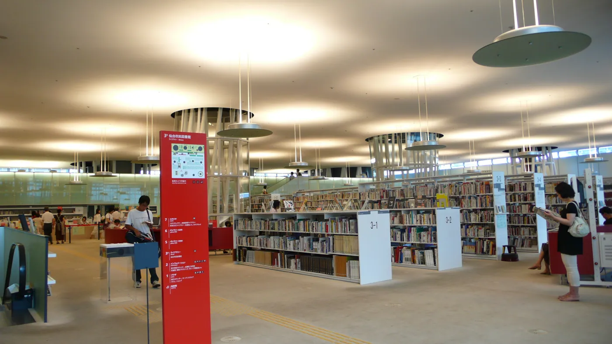
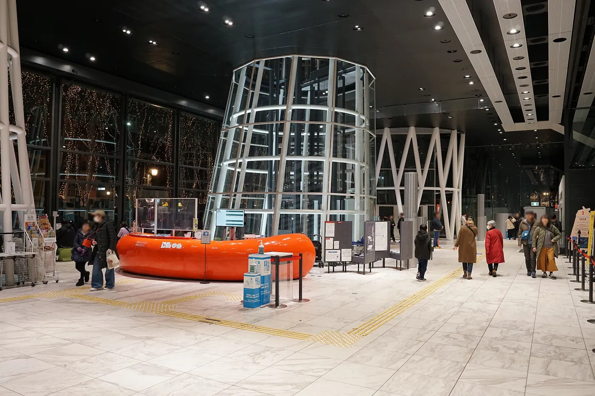
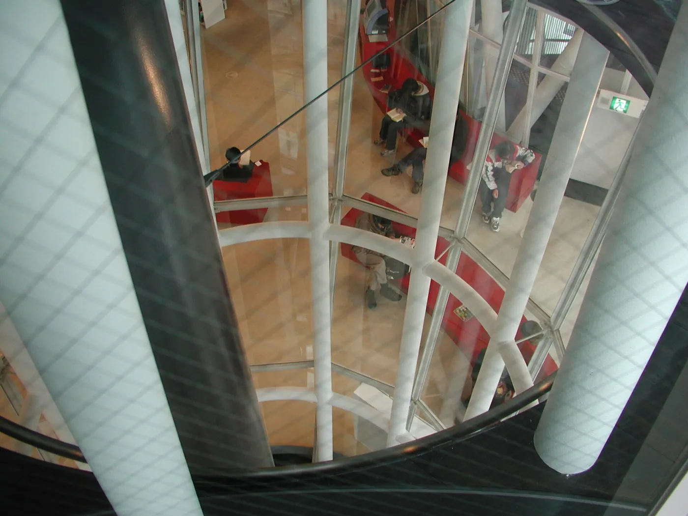
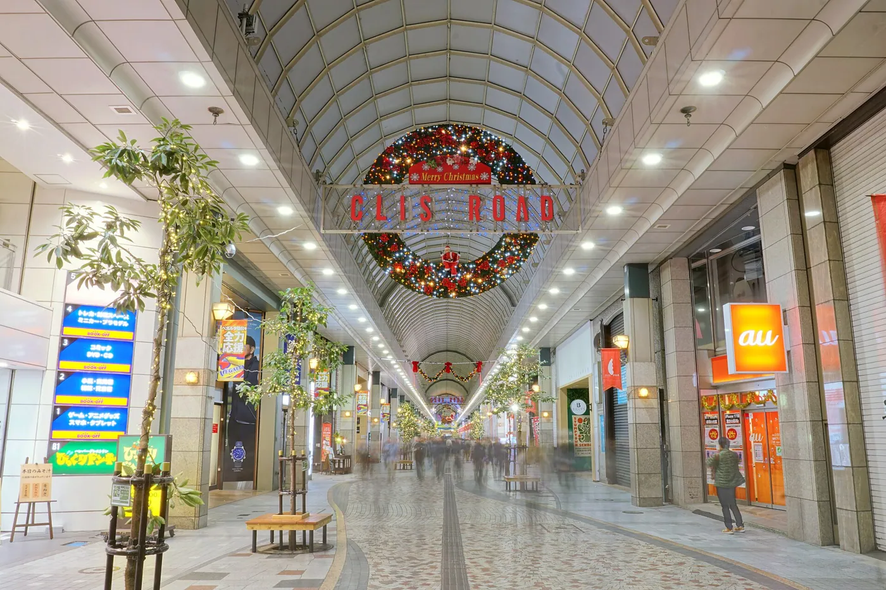
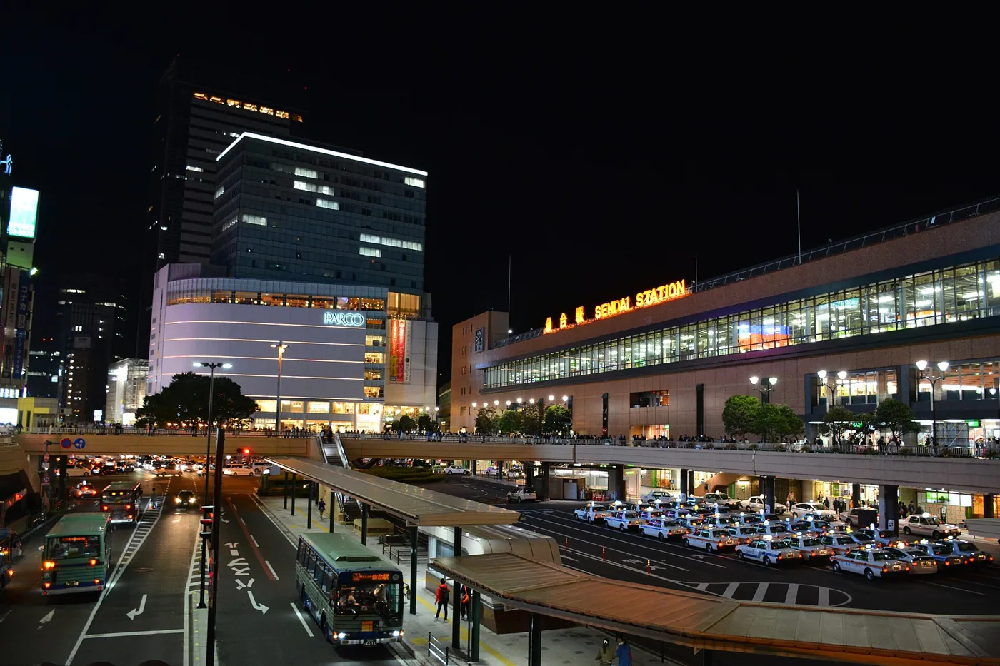

1/8 · Exterior · Sendai Mediatheque, Sendai-shi, Miyagi-pref., JapanPhoto: scarletgreen from Japan · CC BY 2.0 · source
2/8 · ExteriorCC BY-SA 3.0 · source
3/8 · ExteriorPhoto: Asturio Cantabrio · CC BY-SA 4.0 · source
4/8 · Interior · Sendai Mediatheque in Sendai, Miyagi pref., JapanPhoto: yisris / Yuichi · CC BY-SA 2.0 · source
5/8 · InteriorPhoto: 掬茶 · CC BY-SA 4.0 · source
6/8 · Detail · Vertical tube steel lattice column, interior of Sendai Mediatheque in Sendai, Miyagi prefecture, JapanPhoto: Yuco · CC BY-SA 2.0 · source
7/8 · ContextPhoto: 掬茶 · CC BY-SA 4.0 · source
8/8 · Drawing · 800x492 px 72dpi 110kb RGBPhoto: Franciscoantoniomartinezmontalva · CC BY-SA 4.0 · sourceCulture & sport · Contemporary
Sendai Mediatheque
Toyo Ito · Sendai, Japan · 2001
Key featuresThirteen lattice tubes carry thin floor plates, like seaweed in a tank.
- Architect
- Toyo Ito
- Place
- Sendai, Japan
- Year
- 2001
- Typology
- Culture & sport
- Movement
- Contemporary
- Region
- East Asia
See it on the wall


.jpg){kind=link}